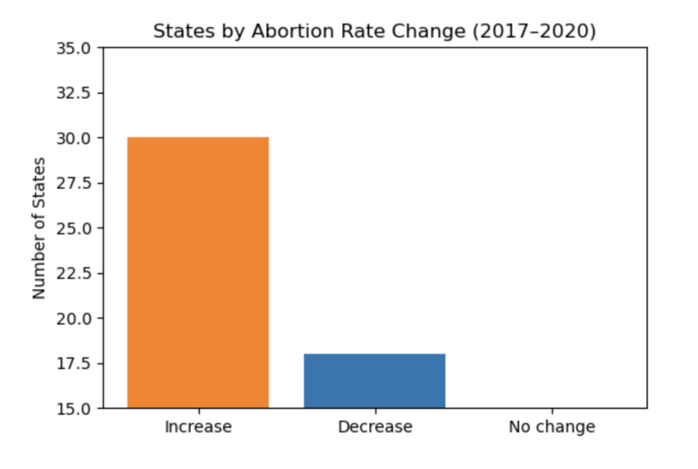
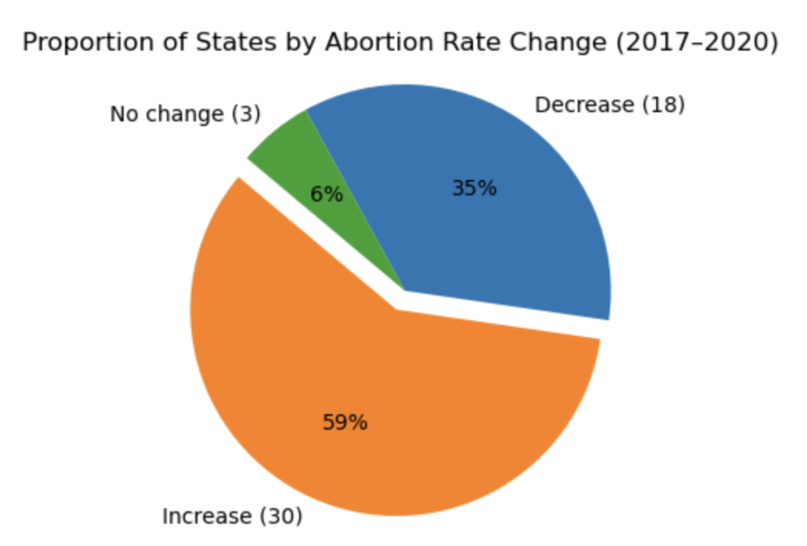
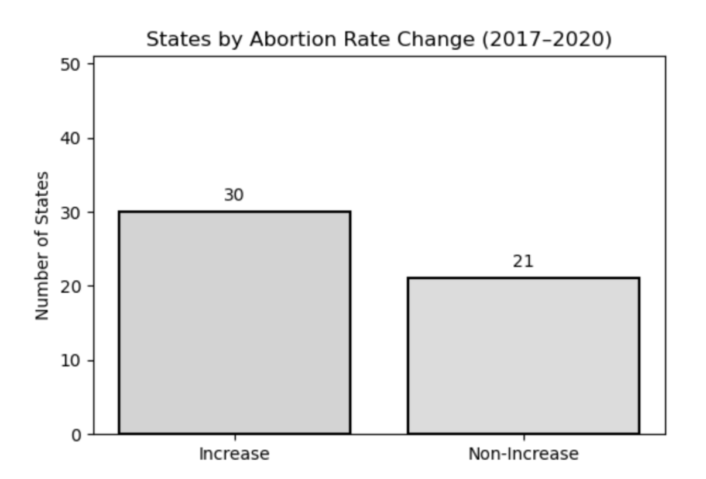
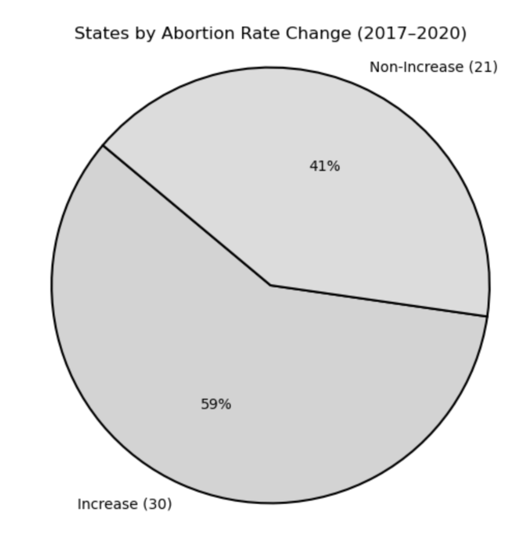

Proposition: Between 2017 and 2020, a majority of U.S. states experienced an increase in their abortion rates.
FOR the Proposition


Design Decisions and Rationale:
- Used percentage transformation (calculated field) for direct comparison of states (Advanced Transformation - 0.5 pts).
- Bold orange for “Increase” slice and bar to clearly distinguish the majority (Mark/Encoding - 2.5 pts).
- Subtle axis start at zero (bar) and explode parameter=0.2 (pie) balance emphasis with transparency (Titles/Labels - 2 pts).
AGAINST the Proposition


Design Decisions and Rationale:
- Merged Decrease+No change into “Non-Increase” to mask majority context (Mark/Encoding - 2 pts).
- Truncated Y-axis (bar) and hollow donut style enhance illusion of parity (Titles/Labels - 1.5 pts).
- Neutral greys and bold edges downplay “Increase” slice with minimal overt deception (Design Rationale - 2 pts).
Final Reflection
Grouping, calculated fields, and mark choices (bar vs pie, axis adjustments) can dramatically shift perception. Advanced transformations like percentage conversion add clarity, while deceptive tweaks like axis truncation or category merging must be disclosed to maintain trust. Clear captions and consistent labeling are critical: they ensure readers can distinguish between ethical emphasis and misleading distortion. Ethical visualization balances persuasive design with full transparency, so that significant patterns are highlighted without sacrificing data integrity.